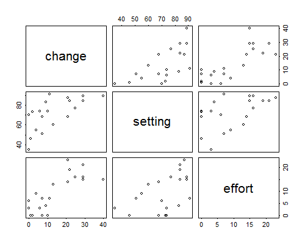
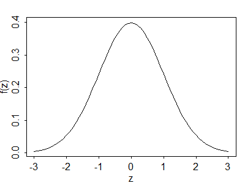

The starting point in our exploration of statistical models in social research will be the classical linear model. Stops along the way include multiple linear regression, analysis of variance, and analysis of covariance. We will also discuss regression diagnostics and remedies.
Linear models are used to study how a quantitative variable depends on one or more predictors or explanatory variables. The predictors themselves may be quantitative or qualitative.
We will illustrate the use of linear models for continuous data using a small dataset extracted from Mauldin and Berelson (1978) and reproduced in Table 2.1. The data include an index of social setting, an index of family planning effort, and the percent decline in the crude birth rate (CBR)—the number of births per thousand population—between 1965 and 1975, for 20 countries in Latin America and the Caribbean.
Table 2.1. The Program Effort Data
| Setting | Effort | CBR Decline | |
| Bolivia | 46 | 0 | 1 |
| Brazil | 74 | 0 | 10 |
| Chile | 89 | 16 | 29 |
| Colombia | 77 | 16 | 25 |
| CostaRica | 84 | 21 | 29 |
| Cuba | 89 | 15 | 40 |
| Dominican Rep | 68 | 14 | 21 |
| Ecuador | 70 | 6 | 0 |
| El Salvador | 60 | 13 | 13 |
| Guatemala | 55 | 9 | 4 |
| Haiti | 35 | 3 | 0 |
| Honduras | 51 | 7 | 7 |
| Jamaica | 87 | 23 | 21 |
| Mexico | 83 | 4 | 9 |
| Nicaragua | 68 | 0 | 7 |
| Panama | 84 | 19 | 22 |
| Paraguay | 74 | 3 | 6 |
| Peru | 73 | 0 | 2 |
| Trinidad-Tobago | 84 | 15 | 29 |
| Venezuela | 91 | 7 | 11 |
The index of social setting combines seven social indicators, namely literacy, school enrollment, life expectancy, infant mortality, percent of males aged 15–64 in the non-agricultural labor force, gross national product per capita and percent of population living in urban areas. Higher scores represent higher socio-economic levels.
The index of family planning effort combines 15 different program indicators, including such aspects as the existence of an official family planning policy, the availability of contraceptive methods, and the structure of the family planning program. An index of 0 denotes the absence of a program, 1–9 indicates weak programs, 10–19 represents moderate efforts and 20 or more denotes fairly strong programs.
Figure 2.1 shows scatterplots for all pairs of variables. Note that CBR decline is positively associated with both social setting and family planning effort. Note also that countries with higher socio-economic levels tend to have stronger family planning programs.
Figure 2.1 Scattergrams for the Program Effort Data
In our analysis of these data we will treat the percent decline in the CBR as a continuous response and the indices of social setting and family planning effort as predictors. In a first approach to the data we will treat the predictors as continuous covariates with linear effects. Later we will group them into categories and treat them as discrete factors.
The first issue we must deal with is that the response will vary even among units with identical values of the covariates. To model this fact we will treat each response \( y_i \) as a realization of a random variable \( Y_i \). Conceptually, we view the observed response as only one out of many possible outcomes that we could have observed under identical circumstances, and we describe the possible values in terms of a probability distribution.
For the models in this chapter we will assume that the random variable \( Y_i \) has a normal distribution with mean \( \mu_i \) and variance \( \sigma^2 \), in symbols:
\[ Y_i \sim N(\mu_i,\sigma^2). \]The mean \( \mu_i \) represents the expected outcome, and the variance \( \sigma^2 \) measures the extent to which an actual observation may deviate from expectation.
Note that the expected value may vary from unit to unit, but the variance is the same for all. In terms of our example, we may expect a larger fertility decline in Cuba than in Haiti, but we don’t anticipate that our expectation will be closer to the truth for one country than for the other.
The normal or Gaussian distribution (after the mathematician Karl Gauss) has probability density function
\[\tag{2.1}f(y_i) = \frac{1}{\sqrt{2\pi\sigma^2}} \exp\{-\frac{1}{2} \frac{(y_i-\mu_i)^2}{\sigma^2}\}.\]The standard density with mean zero and standard deviation one is shown in Figure 2.2.
Figure 2.2 The Standard Normal Density
Most of the probability mass in the normal distribution (in fact, 99.7%) lies within three standard deviations of the mean. In terms of our example, we would be very surprised if fertility in a country declined \( 3\sigma \) more than expected. Of course, we don’t know yet what to expect, nor what \( \sigma \) is.
So far we have considered the distribution of one observation. At this point we add the important assumption that the observations are mutually independent. This assumption allows us to obtain the joint distribution of the data as a simple product of the individual probability distributions, and underlies the construction of the likelihood function that will be used for estimation and testing. When the observations are independent they are also uncorrelated and their covariance is zero, so \( \mbox{cov}(Y_i,Y_j) = 0 \) for \( i \ne j \).
It will be convenient to collect the \( n \) responses in a column vector \( \boldsymbol{y} \), which we view as a realization of a random vector \( \boldsymbol{Y} \) with mean \( \mbox{E}(\boldsymbol{Y}) = \boldsymbol{\mu} \) and variance-covariance matrix \( \mbox{var}(\boldsymbol{Y}) = \sigma^2\boldsymbol{I} \), where \( \boldsymbol{I} \) is the identity matrix. The diagonal elements of \( \mbox{var}(\boldsymbol{Y}) \) are all \( \sigma^2 \) and the off-diagonal elements are all zero, so the \( n \) observations are uncorrelated and have the same variance. Under the assumption of normality, \( \boldsymbol{Y} \) has a multivariate normal distribution
\[\tag{2.2}\boldsymbol{Y} \sim N_n( \boldsymbol{\mu}, \sigma^2\boldsymbol{I})\]with the stated mean and variance.
Let us now turn our attention to the systematic part of the model. Suppose that we have data on \( p \) predictors \( x_1, \ldots, x_p \) which take values \( x_{i1}, \ldots, x_{ip} \) for the \( i \)-th unit. We will assume that the expected response depends on these predictors. Specifically, we will assume that \( \mu_i \) is a linear function of the predictors
\[ \mu_i = \beta_1 x_{i1} + \beta_2 x_{i2} + \ldots + \beta_p x_{ip} \]for some unknown coefficients \( \beta_1, \beta_2, \ldots, \beta_p \). The coefficients \( \beta_j \) are called regression coefficients and we will devote considerable attention to their interpretation.
This equation may be written more compactly using matrix notation as
\[\tag{2.3}\mu_i = \boldsymbol{x}_i'\boldsymbol{\beta},\]where \( \boldsymbol{x}_i' \) is a row vector with the values of the \( p \) predictors for the \( i \)-th unit and \( \boldsymbol{\beta} \) is a column vector containing the \( p \) regression coefficients. Even more compactly, we may form a column vector \( \boldsymbol{\mu} \) with all the expected responses and then write
\[\tag{2.4}\boldsymbol{\mu} = \boldsymbol{X\beta},\]where \( \boldsymbol{X} \) is an \( n \times p \) matrix containing the values of the \( p \) predictors for the \( n \) units. The matrix \( \boldsymbol{X} \) is usually called the model or design matrix. Matrix notation is not only more compact but, once you get used to it, it is also easier to read than formulas with lots of subscripts.
The expression \( \boldsymbol{X\beta} \) is called the linear predictor, and includes many special cases of interest. Later in this chapter we will show how it includes simple and multiple linear regression models, analysis of variance models and analysis of covariance models.
The simplest possible linear model assumes that every unit has the same expected value, so that \( \mu_i = \mu \) for all \( i \). This model is often called the null model, because it postulates no systematic differences between the units. The null model can be obtained as a special case of Equation 2.3 by setting \( p=1 \) and \( x_i=1 \) for all \( i \). In terms of our example, this model would expect fertility to decline by the same amount in all countries, and would attribute all observed differences between countries to random variation.
At the other extreme we have a model where every unit has its own expected value \( \mu_i \). This model is called the saturated model because it has as many parameters in the linear predictor (or linear parameters, for short) as it has observations. The saturated model can be obtained as a special case of Equation 2.3 by setting \( p=n \) and letting \( x_i \) take the value 1 for unit \( i \) and 0 otherwise. In this model the \( x \)’s are indicator variables for the different units, and there is no random variation left. All observed differences between countries are attributed to their own idiosyncrasies.
Obviously the null and saturated models are not very useful by themselves. Most statistical models of interest lie somewhere in between, and most of this chapter will be devoted to an exploration of the middle ground. Our aim is to capture systematic sources of variation in the linear predictor, and let the error term account for unstructured or random variation.